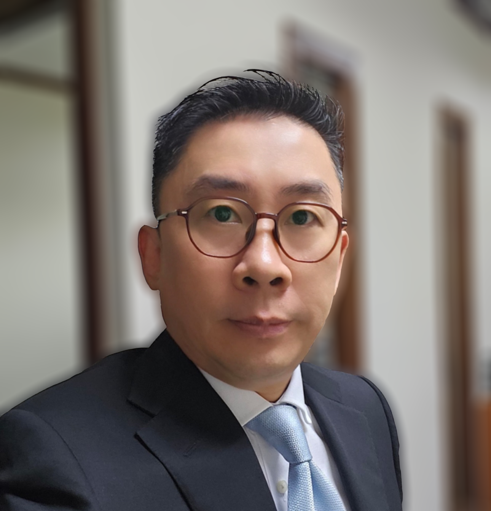

Principal Partner
CHEW YONG SEE 丘容僖

Corporate Lawyer | Capital Markets | Structured Investments | Regulatory Advisor
A distinguished legal practitioner with over 25 years of experience in corporate law, finance, and regulatory compliance, Mr. Chew combines elite academic credentials (LL.B & B.Com (Accounting), University of Melbourne, 1994) with a proven track record in high-stakes transactions.
Admitted to the Malaysian Bar in 1996, he has since been a trusted advisor to corporations, investors, and government bodies.
Professional Journey
- Early Career: Trained at Messrs Rashid & Lee, a top-tier Malaysian corporate firm, specializing in capital markets, M&A, and venture capital.
- Leadership Role: Co-headed the corporate and finance division at Messrs Ghazi & Lim, steering complex financings and cross-border deals.
- Entrepreneurship: Founded Messrs Yong See & Partners (2007), delivering tailored legal solutions to multinationals, PLCs, SMEs, and institutional clients.
Key Expertise
-
Corporate & M&A
- Joint ventures, share acquisitions (public/private), Bursa Malaysia listings, restructuring, and FDI advisory.
-
Capital Market & Financing
- Project financing, equity & bond issuances, and banking (including bilateral, syndicated financing – both onshore and offshore).
-
Structured Investments
- Advising clients on planning and structuring commercial ventures, including investments and participations, with integrated analysis of commercial viability, tax efficiency, and regulatory compliance.
- Designing bespoke investment frameworks for private equity, venture capital, and cross-border transactions.
-
Investment Funds
- Establishment of unit trust, property trust, and venture capital funds; end-to-end transactional support.
-
Regulatory & Policy Advisory
- Independent advisor to Malaysia’s National Sports Council, Sports Commissioner, and Communications & Multimedia Commission, influencing legislative frameworks.
-
Real Estate
- Acquisitions, disposals, and due diligence for residential, commercial, and plantation assets.
Reputation & Impact
Widely regarded for his strategic insight, meticulous due diligence, and pragmatic yet commercial approach, Mr. Chew is a go-to counsel for clients navigating Malaysia’s dynamic corporate and regulatory landscape.